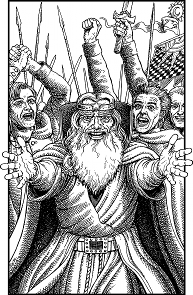

350
As soon as his ship is a safe distance beyond the walls of Gazad Helkona, Guildmaster Banedon hands control of the helm to his bo’sun and then hurries down to the main deck to greet you and Lone Wolf. He praises you heartily for the success of the rescue, and Lone Wolf in turn thanks you sincerely for saving him from the clutches of Naar’s fell disciples.
A swift course is set for the Kai Monastery and the voyage is completed within ten hours. You spend most of the journey home sleeping off the fatigue of your ordeal, but you awake in time to join Lone Wolf at the prow as Cloud-dancer approaches the monastery shortly after dawn.
Your arrival is greeted by a chorus of thunderous cheers from your fellow kinsmen. Every Kai who is present at the monastery rushes to the training park to celebrate the return of your leader. Banedon positions his craft above the park, and hawsers are dropped from stern and prow to anchor it in position. Then you join Lone Wolf in the boarding cage which is swiftly lowered to the ground.
Lord Rimoah appears among the excited throng of young Kai Lords who are gathered around the cage. With tears of joy welling in his eyes, he embraces you both and then offers up a prayer of thanksgiving to the Goddess Ishir for your safe return. He voices his hope that Lone Wolf’s abduction will serve as a poignant reminder to the Kai that they should be on their guard at all times, for Naar and his agents will always exploit an opportunity to damage or destroy your noble order.

Congratulations, Grand Master. You have met this difficult challenge and you have triumphed. Your brave and daring rescue of Lone Wolf will long be remembered in the legends of the New Order Kai. Yet the fight against evil goes ever on. Soon your courage and Kai skills will be put to the test again in a distant realm of Magnamund. The nature of the quest and the dangers that await you will be revealed in the next exciting Lone Wolf New Order adventure entitled: